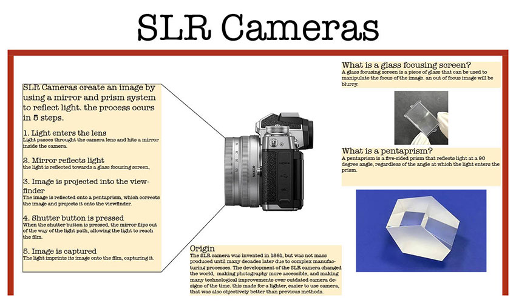

This page is dedicated to the infographic I created in Applied Engineering 110 this semester.
With this project, we were expected to design an infographic about a communication engineering topic. I chose SLR cameras.

Here is the original Infographic I created for AENG 110. I used Adobe Indesign and Photoshop. I had never made an infographic like this until now. I do a lot of CAD here at Millersville, so it was a fun challenge to try and make something a little more artistic.